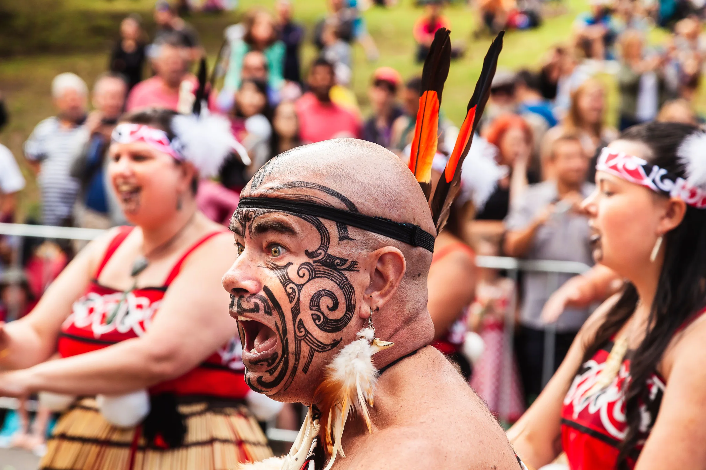

Where to be and when
The tour begins in Auckland. Your Travel Director will meet you in the hotel foyer at Horizon by SkyCity at 6:00pm, ahead of our Welcome Dinner together.
🕔 Welcome evening
We meet in the lobby at Horizon by SkyCity (85–93 Hobson St, Auckland) at 6:00pm, followed by dinner together as a group.
Before then, Auckland is yours to explore — arrive at your leisure and settle in at your own pace.
🏨 Hotel check-in
Check-in is typically available from 3:00 PM. If you arrive earlier, the hotel will usually store your main luggage at reception until your room is ready.
✈️ Flights & transfers
Flights should land into Auckland Airport by 4:00pm on Day 1, to comfortably make our 6:00pm meeting time.
Airport transfers aren't included on this tour — you're welcome to arrange your own, or purchase a transfer in advance through AAT Kings.
🧭 Arrival note
Before you travel, register on the My AAT Kings Travel Portal (my.aatkings.com/register) — it only takes a few minutes and covers your passport, contact and emergency details.
Keep your hotel address, booking details, passport and phone easily accessible on travel day.
What stays with you
One habit makes travel days much easier: keep the important things in your day bag, not your main suitcase.
🛂 Passport & travel documents
Know where your passport is at all times, and keep it with you — not packed in your main suitcase — on any day we're flying or on the move between islands.
It is also good habit to carry some form of ID on your person day to day.
✅ Day bag essentials
Your main suitcase goes into the coach hold on travel days and may not be accessible until you reach the hotel. Keep anything you might need during the day with you:
- Glasses, contact lenses or hearing aids
- Medication and prescription items
- Phone, charger and any cables
- Cards, cash and travel money
- A reusable water bottle — we'll have rest stops to refill along the way
A useful rule: if you would miss it for a few hours, it belongs in your day bag.

Before you pack
These are the details that tend to make the biggest practical difference.
👟 Walking shoes
Glacier viewpoints, canyon trails, geothermal walkways, Hobbiton's rolling hills — this tour covers a lot of ground on foot, across both islands.
Comfortable, well-worn shoes make a genuine difference. If you are unsure which pair to bring, bring your most comfortable ones.
🌦️ Weather and layers
New Zealand's weather shifts with the region, the island and the altitude — a warm Auckland morning and an alpine afternoon in Queenstown can feel like different seasons entirely.
A waterproof jacket you trust, a mid-layer, and comfortable shoes will do most of the heavy lifting. Forecasts are useful but treat them as a guide rather than a guarantee.
🔌 Power adapters
New Zealand uses the Type I plug (angled three-pin) — different from the UK's Type G, so bring a dedicated adapter for this one rather than relying on what you packed for Europe or the UK.
🧳 Packing
Pack for usefulness rather than volume. Laundry facilities are available at most of the places we stay, so you don't need to pack for all 17 days at once.
If hot pools or thermal spas appeal — Rotorua is the place for it — a swimsuit is worth packing.
The rhythm of it
This is a big one — 17 days, two islands, Auckland to Christchurch. Geothermal wonders and Māori culture around Rotorua, the capital at Wellington, a crossing of Cook Strait to the South Island, then Kaikoura's coastline, Dunedin, the fjords of Te Anau and Milford Sound, Queenstown, the glaciers of the West Coast, and the TranzAlpine train back through the Southern Alps to Christchurch.
This itinerary is designed to let you experience the best of both islands — the pace moves, and that's part of what makes it feel so full. There will be some earlier starts and longer travel days, but most people settle into the rhythm surprisingly quickly.
Free time is built in throughout — Rotorua, Wellington and Queenstown in particular — so there's plenty of room to explore at your own pace or add an optional experience.
🚌 On the coach
Daily seat rotation is standard practice, so everyone gets a fair share of the views — I'll explain the system clearly on Day One.
Snacks are absolutely fine. Just avoid hot food, hot drinks and anything likely to melt, spill or perfume the entire coach by lunchtime. Please keep your seat area tidy — it's a shared space and it makes a real difference to everyone's day.
On the day we cross Cook Strait, keep your day bag with you and a layer handy for time on deck.
🏨 Hotels vary
Across both islands, hotels range from modern city properties to smaller, regional stays — that variety is part of the character of a trip like this.
Porterage is generally provided in major cities, but at some of the smaller regional stops you may need to carry or wheel your own bags to your room — good to know in advance.
🚗 Our Driver
Our Driver navigates a genuinely varied route — coastal roads, mountain passes and city centres across both islands all take real skill.
By the end of the tour, most groups have a real appreciation for just how much goes into it.
⏰ Tour timings & inclusions
Our days run to a schedule. Being ready on time — for departures, meals and activities — keeps things on track for everyone in the group.
I'll always let you know what's coming up and what to be prepared for. All we ask is that you're there on time, ready to go.
I use WhatsApp for simple reminders and day-to-day updates while we are travelling. It is optional, but it usually makes the small daily details easier.
- 1Download and set up WhatsApp before you travel if you do not already use it. Download WhatsApp
- 2Save my number — it is in your welcome email, or use the WhatsApp link at the top of this page.
- 3Send me a message with your name so I know you are set up.
If you'd rather not use WhatsApp, that's fine — everything important will still reach you.
A few practical things for later
You do not need to make all of these decisions before we meet. They become much easier once you can see the pace of the tour and what suits you.
⭐ Optional experiences
This tour has one of the widest ranges of optional experiences I take guests through — Hobbiton, Milford Sound scenic flights, glacier helicopter landings, jet boating, wine tours, glow worm caves and plenty more, depending on where we are.
In my experience, the optionals are often what people remember most. I'll walk you through what's available as we go, and payment is by card only, arranged through me on tour.
💳 Money & cards
Cards are widely accepted across New Zealand, but a small amount of cash can still be useful for smaller cafes, markets or local purchases.
It's a single currency for the whole trip — New Zealand Dollars (NZD) — which keeps things simple.
💶 Gratuities
Porterage, where your hotel provides it, is already included in your tour price. If you'd like to recognise your Travel Director and Driver with a tip at the end of the trip, that's entirely a personal choice.
Guidance on appropriate amounts is in your AAT Kings documents, and you're welcome to ask me anytime on tour. This does not need to be solved on the first morning.
Questions before we begin?
Save my contact now, and keep your official joining instructions somewhere easy to find. That is enough for the moment.
Damian Watson
Travel Director · AAT Kings
Phone / WhatsApp
WhatsApp is usually the easiest way to reach me during the trip.
Urgent before departure?
Before the tour begins, I may occasionally be travelling or finishing another tour, but I will always get back to you as soon as I can.
For anything time-sensitive before Day 1, AAT Kings' New Zealand Guest Services team is there to help: 0800 500 146 (New Zealand).
Once we are together, things usually become much more straightforward day to day.
Final note
Auckland to Christchurch, two islands and seventeen days across Aotearoa New Zealand — geysers, fjords, glaciers and everything in between. I'm genuinely looking forward to sharing all of it with you. See you in Auckland.